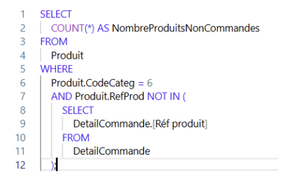
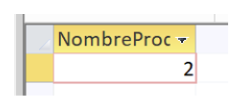
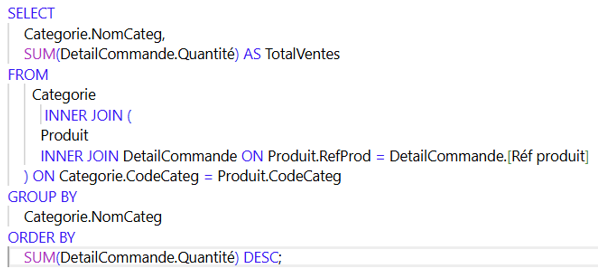
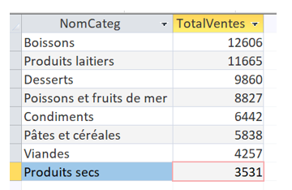

Partie 2 : Exploitation des données
Ma partie du projet consistait à déterminer quelles informations KDou devrait collecter pour mieux connaître ses clients et améliorer son offre, dans le cadre de l'application que nous développons. Pour cela, je me suis d'abord demandé ce dont l'entreprise a réellement besoin pour livrer ses commandes, personnaliser ses propositions et maîtriser ses coûts, sans collecter plus de données que nécessaire. Cette réflexion s'appuie sur le principe de minimisation des données du RGPD, qui impose de ne recueillir que les informations utiles à un objectif précis.
J'ai ainsi retenu cinq catégories : les informations sur les clients, leurs préférences, l'historique des commandes, les délais de livraison et les coûts d'emballage. Les trois premières permettent de connaître la clientèle et de mettre en place un système de fidélité adapté, par exemple avec des offres basées sur les produits préférés de chacun. Les deux dernières concernent la logistique et vont dans le sens de l'image éco-responsable que KDou souhaite renforcer, en réduisant les retards et en optimisant les emballages.
Pour vérifier l'utilité de ces données, je les ai ensuite mises en relation avec la base de KDou grâce à deux requêtes SQL, présentées dans la suite de cette partie.
Bilan de l'étude
Pour mon indicateur personnel, j'ai choisi d'analyser les ventes de KDou par catégorie de produits.L'objectif est de savoir quelles catégories se vendent le plus et le moins, afin d'aider l'entreprise à mieux adapter son catalogue, à gérer ses stocks et à prendre de meilleures décisions commerciales. Le résultat montre que les Boissons sont en tête et les Produits secs en dernier. KDou peut donc renforcer le stock des catégories les plus demandées, proposer des promotions ou des points de fidélité sur celles qui se vendent moins, et adapter son offre en conséquence. J'en ai appris qu'une requête bien construite transforme des données brutes en information utile pour décider, même si elle ne mesure que les quantités et non la rentabilité.
Les cinq catégories d'informations retenues
Dans le cadre du projet, j'ai étudié les informations que l'entreprise pourrait collecter afin d'améliorer son fonctionnement et son offre commerciale. Mon étude s'est concentrée sur cinq catégories principales, résumées dans le tableau ci-dessous.
| Catégorie | Informations à collecter | Utilité pour l'entreprise |
|---|---|---|
| Informations sur les clients | Nom, adresse électronique, téléphone et adresse de livraison. | Identifier les clients et gérer les livraisons. |
| Préférences des clients | Produits, catégories et marques préférés. | Personnaliser les offres et les récompenses de fidélité. |
| Historique des commandes | Commandes précédentes, dates et montants. | Comprendre les comportements d'achat et anticiper les commandes. |
| Délais de livraison | Délais, retards et statuts de livraison. | Améliorer les performances de livraison et l'expérience client. |
| Coûts d'emballage | Types d'emballages, quantités et coûts. | Optimiser les emballages et les coûts de livraison. |
D'après mon étude, ces informations permettent de mieux comprendre les besoins des clients, de personnaliser les offres, d'améliorer les livraisons et d'optimiser les coûts d'emballage.
Mon indicateur personnel: Les produits carnés jamais commandés
Objectif de mon indicateur
J'ai voulu calculer le nombre de produits carnés qui n'ont jamais été commandés par les clients.
Explication
J'ai utilisé la fonction COUNT(*) pour compter les produits, et la condition CodeCateg = 6 pour sélectionner uniquement la catégorie des produits carnés. J'ai ensuite ajouté une sous-requête avec NOT IN afin d'exclure tous les produits qui apparaissent dans la table DetailCommande. Il ne reste alors que les produits qui n'ont jamais été commandés.
Mon indicateur SQL
SELECT
COUNT(*) AS NombreProduitsNonCommandes
FROM
Produit
WHERE
Produit.CodeCateg = 6
AND Produit.RefProd NOT IN (
SELECT
DetailCommande.[Réf produit]
FROM
DetailCommande
);Résultat
Mon indicateur personel renvoie 2 produits carnés qui n'ont jamais été commandés.


Analyse de ce résultat
Cet indicateur permet à KDou d'identifier les produits carnés que les clients n'ont pas encore achetés. L'entreprise peut ainsi s'interroger sur leur visibilité dans le catalogue, leur prix ou leur intérêt, et envisager des actions pour relancer leurs ventes, comme une promotion.
Ma requête indique seulement qu'aucune commande n'est enregistrée dans la base. Elle ne explique pas pourquoi ces produits ne se vendent pas.
Requête personnelle 1 : Les catégories les plus et les moins vendues
Objectif de ma requête
J'ai cherché à identifier les catégories de produits qui enregistrent les quantités de ventes les plus élevées et les plus faibles chez KDou.
Intérêt pour KDou
Cette analyse aide KDou à mieux comprendre les préférences de ses clients. L'entreprise peut adapter son catalogue, gérer ses stocks et prendre de meilleures décisions commerciales.
Explication de ma requête
J'ai relié trois tables, Categorie, Produit et DetailCommande, grâce à des jointures internes (INNER JOIN). La fonction SUM() calcule la quantité totale vendue dans chaque catégorie, et la clause GROUP BY regroupe les résultats par catégorie. Enfin, ORDER BY ... DESC classe les catégories de la plus vendue à la moins vendue.
Ma requête SQL
SELECT
Categorie.NomCateg,
SUM(DetailCommande.Quantité) AS TotalVentes
FROM
Categorie
INNER JOIN (
Produit
INNER JOIN DetailCommande
ON Produit.RefProd = DetailCommande.[Réf produit]
)
ON Categorie.CodeCateg = Produit.CodeCateg
GROUP BY
Categorie.NomCateg
ORDER BY
SUM(DetailCommande.Quantité) DESC;Résultat de ma requête
Les Boissons sont la catégorie la plus vendue, avec 12 606 unités. Les Produits secs sont la catégorie la moins vendue, avec 3 531 unités.


Analyse de ce résultat
Les Boissons se vendent environ 3,6 fois plus que les Produits secs. KDou peut donc s'appuyer sur cet écart pour adapter son offre, renforcer le stock des catégories les plus demandées et réfléchir à des offres promotionnelles ou à des points de fidélité sur celles qui se vendent moins.
Ma requête compare les quantités vendues, pas le chiffre d'affaires. Une catégorie moins vendue peut quand même être très rentable, car ses produits peuvent coûter plus cher.
Allons à la prochaine partie
Partie 3